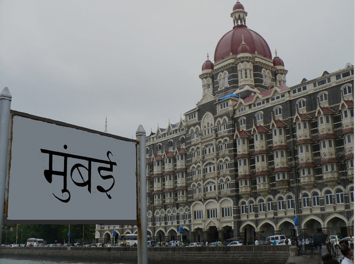

2008 Attack
Taj Mahal Palace Hotel was specifically chosen by Lashkar-e-Taiba for an attack so that it will be "striking a blow against a symbol of Indian wealth and progress". The hotel was attacked on 26 November 2008, during which material damage occurred, including the destruction of the hotel's roof in the hours following. Hostages were taken during the attacks, and at least 167 people were killed, including many foreigners. The casualties were mostly Indian citizens, although westerners carrying foreign passports were singled out. Indian commandos killed the gunmen barricaded in the hotel, to end the three-day battle on 29 November. At least 31 died at the Taj. Approximately 450 people were staying in the Taj Mahal Palace and Hotel at the time of the seizure. The attack was planned using information compiled by David Headley, a Pakistani-American, who had stayed at the hotel multiple times.
Soon after (30 November), Tata chairman Ratan Tata said in an interview with CNN's Fareed Zakaria that they had received advance warning of the attacks and that some countermeasures had been taken. These may have been relaxed before the attack, but in any case were easily sidestepped by the operatives.
The less-damaged sections of the Taj Mahal Palace and Tower hotel reopened on 21 December 2008.see more...